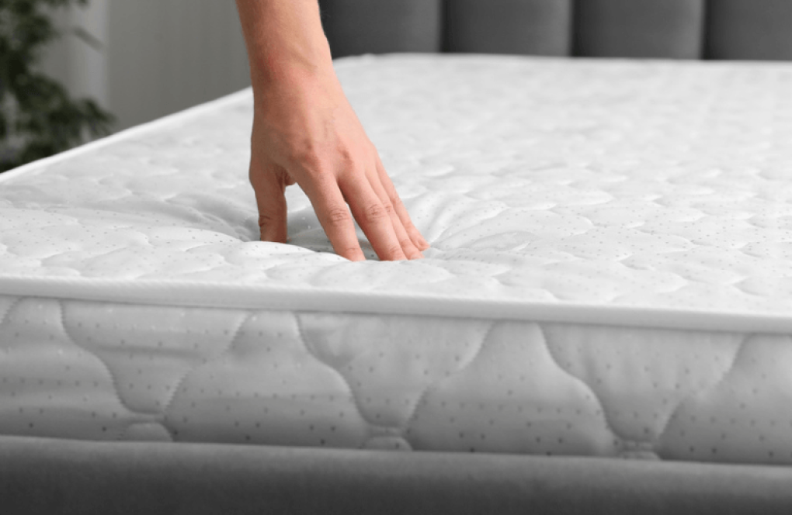
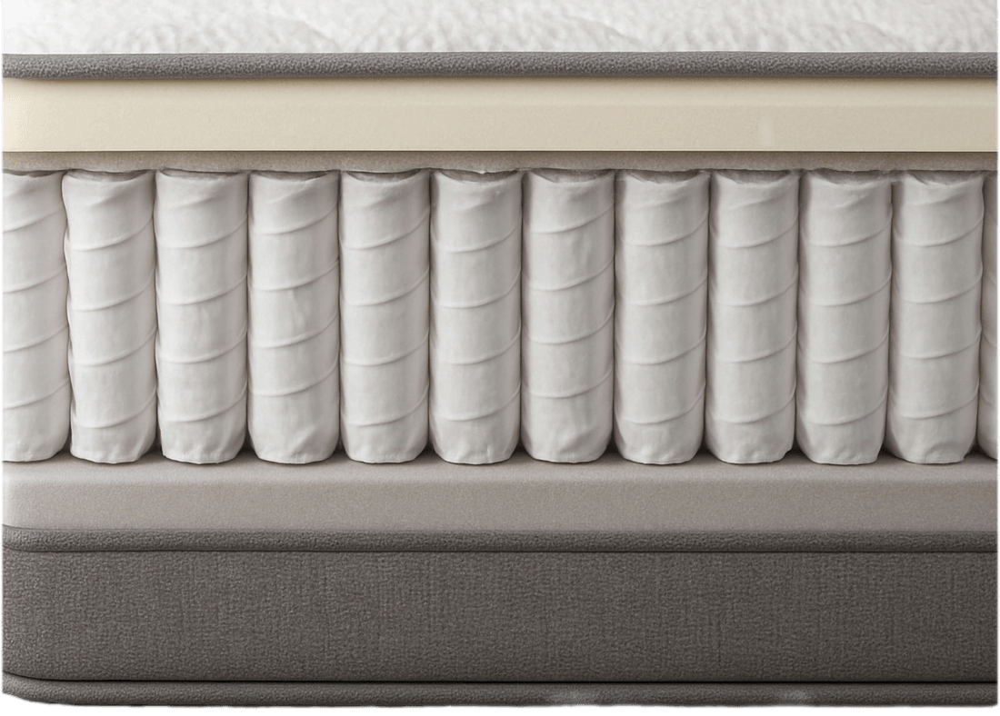

Proč kvalitní matrace vydrží déle?
Když se řekne životnost matrace, většina lidí si představí jedno číslo. 5 let? 8 let? 15 let? Jenže odpověď na otázku „jak dlouho vydrží matrace“ není jednoduchá. Velmi totiž záleží na její kvalitě.

U matrace nejde jen o první pocit pohodlí při ulehnutí. Důležité je, jak se matrace chová po stovkách a tisících nocí, kdy na ni působí váha těla, teplo, vlhkost a každodenní zatížení. Levná matrace může ztratit oporu už po pár nocích. Kvalitní matrace si naopak dokáže udržet pohodlí, pružnost a správnou podporu těla dlouhodobě.
Právě materiály rozhodují o tom, jestli matrace vydrží jen třeba 2 roky, nebo bude spolehlivě sloužit dlouhá léta.

Pěny
Levnější matrace jsou vyrobeny z méně odolných pěn. Na první pohled mohou vypadat podobně jako kvalitnější modely, ale rozdíl se časem ukáže. Pěna se začne rychleji unavovat, matrace ztrácí pružnost a v nejvíce zatěžovaných místech se tvoří prohlubně.
Kvalitní pěna odolává každodenní zátěži výrazně lépe. Po stlačení se vrací zpět do původního tvaru a pomaleji ztrácí své vlastnosti.
Lepidla
U vícevrstvých matrací je důležité, čím jsou vrstvy spojené. Nekvalitní lepidlo může časem povolovat, vrstvy se posouvají nebo oddělují a matrace ztrácí stabilitu.
Někteří výrobci používají lepidla s obsahem chemických rozpouštědel — toluenu, isokyanátů a dalších látek, které nejsou ideální pro zdraví ani pro životní prostředí. Kvalitní ekologická lepidla rozpustná ve vodě spojí vrstvy pevně a bez zbytečné chemické zátěže.

Pružiny nebo taštičky
U pružinových matrací se šetří hlavně na kvalitě jádra. Levnější pružiny mají horší pružnost nebo méně přesné zpracování, časem hůře reagují na tlak těla a v matraci se začnou tvořit nerovnosti. Nepříjemným znakem nekvalitních pružinových matrací je vrzání.
Taštičkové matrace fungují přesněji, protože každá pružina pracuje samostatně a je uložená v textilní taštičce. Kvalita jádra je proto ještě důležitější. Dobře zpracované taštičky si déle drží pružnost, stabilně podpírají tělo a pomáhají matraci zachovat tvar.

Boční výztuha a potah
Pokud okraj matrace nemá dostatečnou výztuhu, může se časem propadat a ztrácet pevnost — poznáte to při sezení na kraji postele nebo při vstávání. Slabší výztuha navíc zmenšuje využitelnou plochu matrace.
Levný potah bývá tenký, méně prodyšný a hůř odvádí vlhkost, což zkracuje hygienickou životnost matrace. Kvalitní potah pomáhá matraci dýchat a odvádí vlhkost od těla.
Nekvalitní matrace jako špatně postavený dům
Nekvalitní matrace je jako špatně postavený dům, který na první pohled může vypadat bezchybně, ale jeho skutečnou hodnotu neurčuje fasáda. Rozhodují základy, konstrukce, izolace a materiály, které nejsou hned vidět. Pokud se na nich šetří, projeví se to časem — prasklinami, vlhkostí, tepelnými ztrátami nebo rychlejším opotřebením.
Na Světspánku.cz najdete jen kvalitní matrace
Nenajdete u nás matrace s klasickou 2letou zárukou. Do nabídky vybíráme jen modely, které mají pevné jádro, odolné materiály a dávají smysl pro dlouhodobé každodenní spaní. Používáme jen ekologická lepidla, abychom chránili vaše zdraví i životní prostředí.
- pevné jádro a odolné materiály
- ekologická lepidla rozpustná ve vodě
- 90 nocí na vyzkoušení matrace
- až 10letá záruka